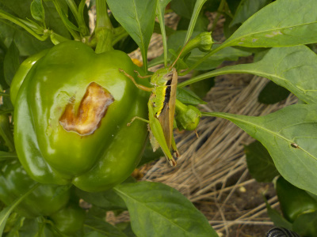
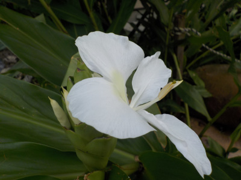
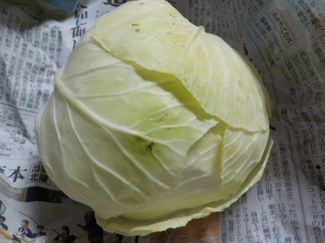

ピーマンに殿様バッタがいました。
2019/08/31
何か食べてるの？

バッタなので葉っぱを食べてても変じゃないですが、野菜を食べるイメージがないです。
たまたま居たんでしょうね。
2019/08/31
何か食べてるの？

バッタなので葉っぱを食べてても変じゃないですが、野菜を食べるイメージがないです。
たまたま居たんでしょうね。
2019/08/31
ミョウガは食べる小さい花と立派な大きな花と2種類あって不思議だなーって思っていたんですが、違う植物でした。

ミョウガの花だと思っていたこの花はハナシュクシャって名前の花でした。
葉っぱが似てるので同じだと思っていました。
ハナシュクシャにはミョウガは出来ないので違うものなんですが、今まで調べてみようって思いませんでした。
調べてスッキリしました。
ネットで検索したら私と同じ勘違いをしているホームページがいくつかあり、正解にたどりつくまでに時間がかかりました。
間違える人が多いみたいです。
2019/08/18
小さいキャベツを収穫しました。

近頃生野菜はキュウリが多かったので、違うものが食べれるようになってうれしいです。
過去の日記
畑仕事じゃないよ。